Атлас мест · Азербайджан
Баку — наши места
27 мест3 роликов24 советуем
Наш топ-10
 Старый город Ичеришехергорода и районы · 👍 Советуем
Старый город Ичеришехергорода и районы · 👍 Советуем Зелёный базар (Ешил базар)рынок · 👍 Советуем · дёшево
Зелёный базар (Ешил базар)рынок · 👍 Советуем · дёшево Денис Мол (Dəniz Mall)торговый центр · 👍 Советуем
Денис Мол (Dəniz Mall)торговый центр · 👍 Советуем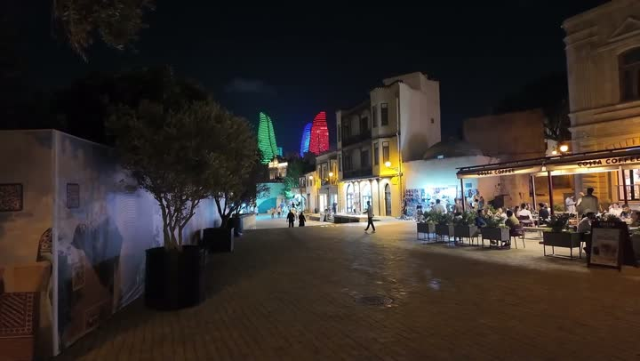
Пламенные башнидостопримечательность · 👍 Советуем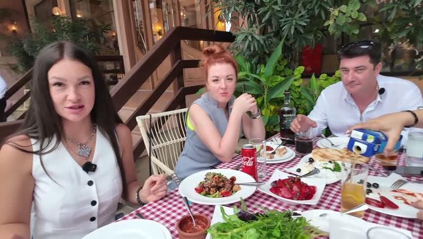
Ресторан Наргиле (Nargile restaurant)кафе и ресторан · 👍 Советуем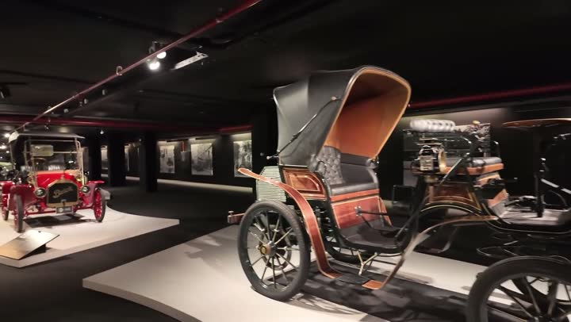
Музей автомобилеймузей · 👍 Советуем Ресторан Ветен Мардакан (Veten Merdekan)кафе и ресторан · 👍 Советуем
Ресторан Ветен Мардакан (Veten Merdekan)кафе и ресторан · 👍 Советуем Бакинский бульвардостопримечательность · 👍 Советуем
Бакинский бульвардостопримечательность · 👍 Советуем улица, где снимали фильм "Бриллиантовая рука"достопримечательность · 👍 Советуем
улица, где снимали фильм "Бриллиантовая рука"достопримечательность · 👍 Советуем Девичья башнядостопримечательность · 👍 Советуем
Девичья башнядостопримечательность · 👍 СоветуемГде поесть — 6
Ресторан Наргиле (Nargile restaurant)кафе и ресторан · 👍 СоветуемРесторан Ветен Мардакан (Veten Merdekan)кафе и ресторан · 👍 Советуем Ресторан Медальонкафе и ресторан · 👍 Советуем · средне
Ресторан Медальонкафе и ресторан · 👍 Советуем · средне Ресторан Сюзмели (SUZMELI)кафе и ресторан · 👍 Советуем
Ресторан Сюзмели (SUZMELI)кафе и ресторан · 👍 Советуем
Ресторан Ветен Мардакан (Veten Merdekan)кафе и ресторан · 👍 СоветуемРесторан Медальонкафе и ресторан · 👍 Советуем · среднеРесторан Сюзмели (SUZMELI)кафе и ресторан · 👍 Советуем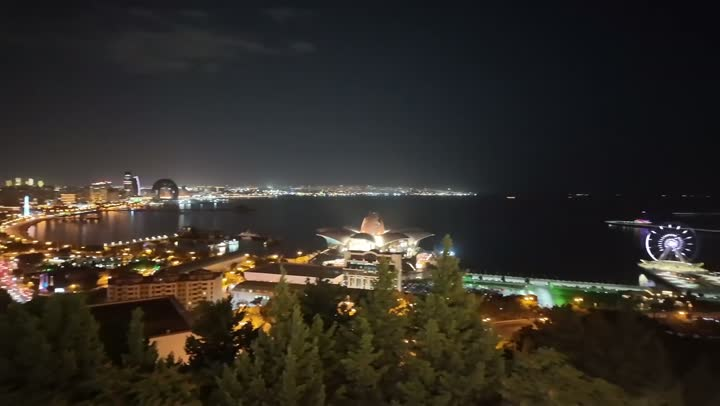
Кафе Венеция (Venezia Lounge & Dining)кафе и ресторан · 👍 СоветуемКафе «Лесис» (Lesis Cafe)кафе и ресторанБесплатно — 6
Старый город Ичеришехергорода и районы · 👍 СоветуемДенис Мол (Dəniz Mall)торговый центр · 👍 СоветуемДевичья башнядостопримечательность · 👍 Советуем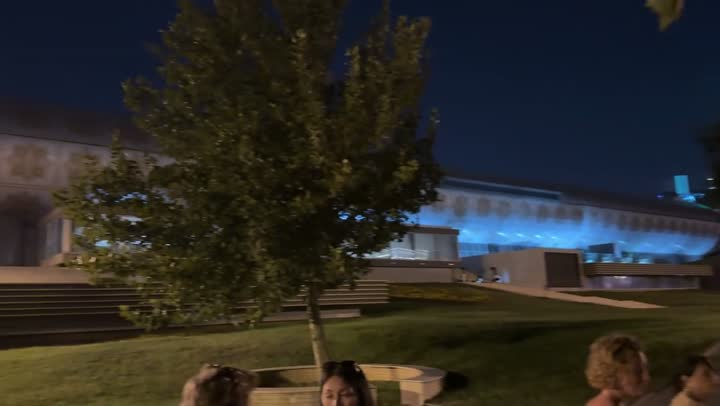
Музей ковров (Azerbaijan Carpet Museum)музей · 👍 Советуем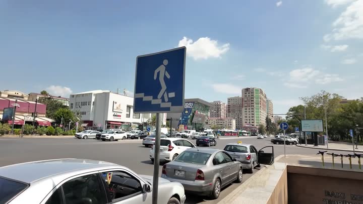
Центр Гейдара Алиева (Heydar Aliyev Center)музей · 👍 Советуем · средне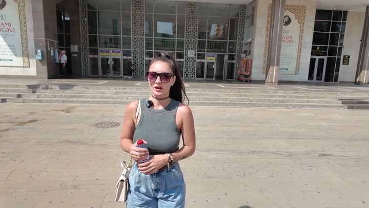
Метро Бакуметро · 👍 СоветуемС детьми — 7
Музей автомобилеймузей · 👍 Советуемулица, где снимали фильм "Бриллиантовая рука"достопримечательность · 👍 Советуем Дворец ручных игрпарк развлечений · 👍 Советуем
Дворец ручных игрпарк развлечений · 👍 Советуем Аптека Чикануаптека · 👍 Советуем
Аптека Чикануаптека · 👍 Советуем Маленькая Венеция (Mini Venice)парк развлечений · 👍 Советуем
Маленькая Венеция (Mini Venice)парк развлечений · 👍 Советуем Отель Парквей Инн (Parkway Inn Hotel&Spa)отель · 🤔 На любителя
Отель Парквей Инн (Parkway Inn Hotel&Spa)отель · 🤔 На любителя
улица, где снимали фильм "Бриллиантовая рука"достопримечательность · 👍 СоветуемДворец ручных игрпарк развлечений · 👍 Советуем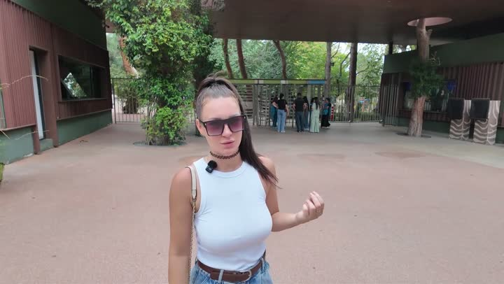
Бакинский зоопарк (Baku Zoological Park)зоопарк · 👍 Советуем · среднеАптека Чикануаптека · 👍 СоветуемМаленькая Венеция (Mini Venice)парк развлечений · 👍 СоветуемОтель Парквей Инн (Parkway Inn Hotel&Spa)отель · 🤔 На любителяКрасивые виды — 11
Старый город Ичеришехергорода и районы · 👍 СоветуемДенис Мол (Dəniz Mall)торговый центр · 👍 СоветуемПламенные башнидостопримечательность · 👍 СоветуемБакинский бульвардостопримечательность · 👍 СоветуемДевичья башнядостопримечательность · 👍 Советуем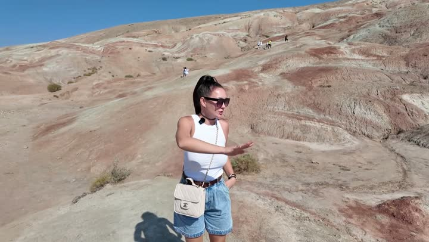
Карамельные горыприрода · 👍 СоветуемЦентр Гейдара Алиева (Heydar Aliyev Center)музей · 👍 Советуем · средне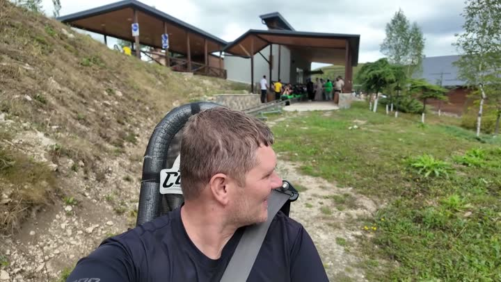
Колесо обозрения (Баку) (Baku Eye)парк развлечений · 👍 Советуем · среднеКафе Венеция (Venezia Lounge & Dining)кафе и ресторан · 👍 СоветуемМаленькая Венеция (Mini Venice)парк развлечений · 👍 Советуем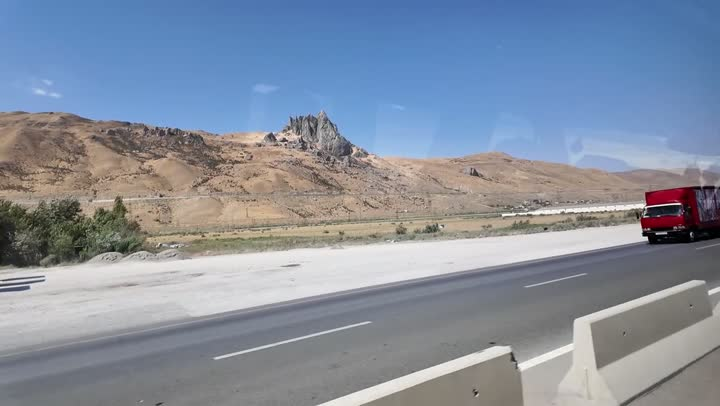
Гора Бешбармаг (Besh Barmag Mountain)природа · 🤔 На любителяБюджетно — 2
Частые вопросы — Баку
Где вкусно поесть в Баку?
Рекомендованные нами рестораны и кафе: "Сюзмели", "Ветен Мардакан", "Nargile", "Тантан".
Какие достопримечательности посмотреть в Баку?
Посмотрите Пламенные башни, Девичью башню, Старый город Ичеришехер, Музей ковров, Центр Гейдара Алиева.
Что интересного для детей в Баку?
Для детей рекомендуем посетить Бакинский зоопарк, Дворец ручных игр, колесо обозрения, Маленькую Венецию.
Как передвигаться по городу?
Метро Баку удобное и напоминает питерское метро; транспортная карта работает и в автобусах.
Все места — 27
Здоровье и спорт — 1
- Аптека Чикану 👍 Советуем
Достопримечательности — 8
- Бакинский бульвар 👍 Советуем
- Девичья башня 👍 Советуем
- Музей автомобилей 👍 Советуем
- Музей ковров (Azerbaijan Carpet Museum) 👍 Советуем
- Пламенные башни 👍 Советуем
- Старый город Ичеришехер 👍 Советуем
- Центр Гейдара Алиева (Heydar Aliyev Center) 👍 Советуем
- улица, где снимали фильм "Бриллиантовая рука" 👍 Советуем
Животные — 1
- Бакинский зоопарк (Baku Zoological Park) 👍 Советуем
Бары и ночная жизнь — 2
- Бар Айс Паб (ICE PUB Yasamal) 👍 Советуем
- Ресторан «Хазар» 👍 Советуем
Природа — 2
- Гора Бешбармаг (Besh Barmag Mountain) 🤔 На любителя
- Карамельные горы 👍 Советуем
Развлечения — 3
- Дворец ручных игр 👍 Советуем
- Колесо обозрения (Баку) (Baku Eye) 👍 Советуем
- Маленькая Венеция (Mini Venice) 👍 Советуем
Рынки и магазины — 2
- Денис Мол (Dəniz Mall) 👍 Советуем
- Зелёный базар (Ешил базар) 👍 Советуем
Еда — 6
- Кафе «Лесис» (Lesis Cafe)
- Кафе Венеция (Venezia Lounge & Dining) 👍 Советуем
- Ресторан Ветен Мардакан (Veten Merdekan) 👍 Советуем
- Ресторан Медальон 👍 Советуем
- Ресторан Наргиле (Nargile restaurant) 👍 Советуем
- Ресторан Сюзмели (SUZMELI) 👍 Советуем
Транспорт — 1
- Метро Баку 👍 Советуем
Жильё — 1
- Отель Парквей Инн (Parkway Inn Hotel&Spa) 🤔 На любителя
Атлас мест канала «Юля и Дима / БЕЗ ТОРМОЗОВ». Описания составлены по нашим роликам; цены — на момент съёмки. Нашли неточность — напишите нам в Telegram.